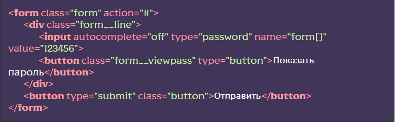

В этом документе описан общий функционал работы с полями, плейсхолдерами, валидацией, вариантами отправки форм и т.д. В отдельных разделах будет описан функционал конкретных элементов форм, таких как:
- Отправка писем на почту (PHPMailer)
- Кастомизация элемента SELECT
- Кастомизация (стилизация) элементов СHECKBOX и RADIO
- Модуль “Маски” для полей ввода
- Модуль «Звездный рейтинг»
- Модуль «Колличество»
- Модуль «Range» (ползунок)
Работа с полями форм
Работа с полями форм подразумевает под собой следующий функционал:
- Добавление классов полю и его родителю при фокусе
- Функционал «Показать пароль» для полей с типом password
- Возможность моментальной валидации поля при потере фокуса
Для того чтобы подключить общий функционал для работы с полями форм необходимо расскоментировать функцию flsForms.formFieldsInit({…}) в файле js/app.js:

Передавать функции можно следующие параметры:
- viewPass - позволяет включить функционал «Показать пароль». true - включено, false - выключено (по умолчанию).
- autoHeight – позволяет включить функционал “Автовысота” для текстовой области. true – включено, false – выключено (по умолчанию).
Работа с атрибутом placeholder
Для того, чтобы надпись в атрибуте поля формы placeholder исчезала при фокусе, необходимо добавить в поле класс input и разкомментировать @import “input”; в файле scss/base/forms/forms.scss. Если нам нужно выключить скрытие для конкретного поля, следует добавить атрибут data-placeholder-nohide
Валидация поля при потере фокуса
Для того чтобы скрипт начал вызывать функционал валидации поля в момент потери им фокуса, следует добавить полю атрибут data-validate.
Стоит добавить, что функционал работы с полями форм также удалит ошибку добавленную к полю валидатором при получении им фокуса. Подробнее о функционале валидации полей смотри далее в этом документе.
Функционал «Показать пароль»
Функционал «Показать пароль», позволяет отображать зашифрованное значение поля с типом password при клике на объект с классом содержащим строку «__viewpass» который находится вместе с полем в одном родителе:
В момент клика на объект с классом содержащим строку «__viewpass» в нему добавляется класс _viewpass-active, а тип поля ввода меняется на text. Повторное нажатие выполнит обратные действия.
Напомню, для того чтобы включить функционал «Показать пароль» следует указать true для параметра viewPass при подключении функционала в файле js/app.js.
Функционал "Автовысота" для textarea
Функционал "Автовысота" позволяет элементу textarea автоматически подстраиваться по высоте под вводимый текст.
Для включения необходимо задать true для параметра autoHeight, а также добавить атрибут data-autoheight элементу(ам) textarea.

Дополнительно можно указать следующие параметры:
- data-autoheight-min=’число’ – минимальная (стартовая) высота textarea
- data-autoheight-max=’число’ – максимальная высота textarea
Валидация элементов форм
Для включения функционала следует раскомментировать функцию flsForms.formSubmit(); и/или flsForms.formFieldsInit({…}) в файле js/app.js
Для того чтобы элемент формы начал проходить валидацию, ему следует добавить атрибут data-required. Теперь при отправке формы (если включена валидация), а также если элементу добавлен атрибут data-validate, он будет проверяться на предмет заполениния.
При добавленном атрибуте data-validate валидация будет происходить мгновенно при потере полем фокуса
Для того чтобы включить особые правила валидации поля, атрибуту следует добавить одно из значений:
- email – включит валидацию на ввод корретного E-mail
- идет работа над новыми пресетами
Пример:

Если элемент заполнен не верно, к нему, а также к его родителю добавится класс _form-error. Если мы хотим дополнительно вывести произвольный текст ошибки, нам следует указать его в атрибуте data-error и добавить к полю:

Теперь, при возникновении ошибки валидации, под элементом добавится объект с классом form__error содержащий ваш текст ошибки.
Напомню, что функционал работы с полями удалит классы ошибок и объект с классом form__error при получении полем фокуса.
Для отключения валидации элементов конкретной формы ей следует добавить атрибут. data-no-validate
Отправка форм
Для включения функционала следует расскоментировать функцию flsForms.formSubmit(); в файле js/app.js:
Валидация элементов формы
По умолчанию, при отправке формы, поля отмеченные data-required/data-required=’…’ будут проходить валидацию. Для отключения валидации элементов конкретной формы, ей следует добавить атрибут data-no-validate
Режимы отправки формы
В ЧФ существует несколько режимов контроля отправки форм:
- Стандартная HTML отправка формы (по умолчанию) – если валидация пройдена (была включена), форма отправится на указанный в атрибуте action адрес (с переходом страницы), методом указанным в атрибуте method.
- AJAX отправка формы – если валидация пройдена (была включена), форма отправится АЈАХ запросом на указанный в атрибуте action адрес, методом указанным в атрибуте method. Страница не перезагрузится, все элементы формы вернутся к исходных значениям (очистка формы).
- Режим имитации отправки формы – если валидация пройдена (была включена), форма никуда не отправится, страница не перезагрузится, все элементы формы вернутся к исходных значениям (очистка формы). Используется для демонстрации работы дополнительных возможностей форм, таких как, например, показ попапа об успешной отправке.
Для включения режима АЈАХ отправки достаточно добавить форме атрибут data-ajax, а если нужен режим имитации отправки добавляем атрибут data-dev.

Прокрутка к элементу с ошибкой
Бывает, что форма очень большая и, при возникновении ошибки валидации, хорошо бы показать элемент с ошибкой пользователю. Для этих целей есть функционал «прокрутка к элементу с ошибкой». Для включения, достаточно добавить форме атрибут data-goto-error

Показ попапа после отправки формы
Если необходимо, после отправки формы, показать попап добавляем к форме атрибут data-popup-message и в качестве значения указываем селектор попапа
Только для режимов data-ajax или data-dev. Функционал попапов также должен быть подключен

События
После каждой отправки формы срабатывает событие formSent, его можно отловить в любой части кода:

Расположение и дополнительные данные
Функции formFieldsInit(), formSubmit() а также объект formValidate находятся в файле js/files/forms/form.js